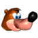
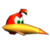
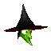
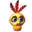
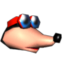
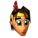
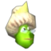
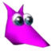

Game Levels
Characters
Among the countless characters in Banjo-Kazooie, the main characters are listed below. If you are interested in getting to know other characters that appear throughout the game, click on this link:Banjo-Kazooie Wiki

Banjo Bear
Honey Bear; Male
Banjo is a brown honey bear created by Rareware and is the playable protagonist of the Banjo-Kazooie series.Banjo is a brown bear with blue eyes and a beige belly. He wears a pair of yellow shorts with no shirt or shoes, a black belt, a shark tooth necklace and a blue backpack. Banjo's personality is very different from that of Kazooie's. Banjo is a well-mannered, sweet-natured bear. Its name is based on a instrument.


Kazooie
Bird; Female
Kazooie is the deuteragonist of the Banjo-Kazooie series. She is a red-crested breegull who lives in her pal Banjo's backpack most of the time, poking her head out only to berate various other characters with insults and jabbering. She is known to leave the backpack on occasion, but her friendship with Banjo always leads her back eventually.Kazooie is a sassy, slightly egotistic bird.

Gruntilda Winkybunion
Human; Female
Gruntilda "Grunty" Winkybunion is the main antagonist of the Banjo-Kazooie series. She is a wicked witch with magical spells that are capable of doing anything, even going as far as death. She also enjoys rhyming, which really annoys Grunty's three sisters somehow. Gruntilda also keeps her spells in a book named Cheato, who doesn't enjoy Gruntilda's plan of becoming beautiful and decides to help Banjo and Kazooie.

Mumbo Jumbo
Shaman; Male
Mumbo Jumbo, often referred to as just Mumbo, is a skull-faced shaman who appears in every game in the Banjo-Kazooie series. Additionally, he is the eponymous shaman of Mumbo's Mountain. He is a friendly but perky friend to Banjo and somewhat Kazooie, and can usually be found residing inside his hut throughout the series.Mumbo generally likes helping people out and has a very strong loyalty streak.

Bottles
Mole; Male
Bottles was a reoccurring character in the Banjo-Kazooie series. He is a shortsighted mole who teaches Banjo and Kazooie abilities throughout Banjo-Kazooie. He is also the brother of Jamjars.Bottles is a gentle, meek mole with a lot of knowledge. While generally non-confrontational, Bottles can get agitated from time to time, as shown when Banjo repeatedly talks to him at the first molehill in Banjo-Kazooie.

Humba Wumba
Human; Female
Humba Wumba is a Native American shaman who made her debut in the Banjo-Kazooie series in Banjo-Tooie. She introduced herself as Mumbo Jumbo's rival, taking up his previous role in Banjo-Kazooie as the shaman who transformed Banjo (and Kazooie eventually), while Mumbo performed a more active role by using his powerful spells around the world so Banjo and Kazooie could complete puzzles.

Brentilda Winkybunion
Witch; Female
Brentilda Winkybunion is one of the four Winkybunion siblings. Unlike the rest of her sisters, Brentilda is a benevolent fairy godmother who abhors her sister Gruntilda's villainy. Like Gruntilda, Mingella, and Blobbelda, Brentilda is green and has pointed ears. In stark contrast with her sisters' drab black robes, Brentilda wears a frilly, lacey, layered pink gown and a pair of fairy wings. She has whitish-blond hair.

Jinjo
Unknown creature; Unsure of gender
Jinjos are small creatures found in every game in the Banjo-Kazooie series. These small, mystical critters with beaks come in a variety of colors and are more intelligent than their appearance might let on. It is never explained in detail, but Jinjos seem to have some magical powers, possessing the ability to fly among other things. They also seem to be able to breathe underwater and live in harsh.
About
Banjo-Kazooie is a series of video games developed by Rare. The games feature a male bear named Banjo and his friend, a large female red bird named Kazooie, who are both controlled by the player. Banjo originally made his debut as a playable character in 1997 as part of the cast of Diddy Kong Racing. Throughout the various games, they are tasked with thwarting the various evil schemes of a witch named Gruntilda. The first game, Banjo-Kazooie, was released in 1998 to critical acclaim and was followed by three sequels and a spin-off racing game.
The franchise debuted on the Nintendo 64 and subsequent entries in the series also appeared on Game Boy Advance and Xbox 360. The three main titles then saw a release on Xbox One as part of Rare Replay. The franchise has been largely dormant since the release of Banjo-Kazooie: Nuts & Bolts in 2008. However, Banjo and Kazooie have made occasional appearances in later crossover titles such as Sega's All-Stars Racing series and Nintendo's Super Smash Bros. series.
Banjo-Kazooie was released on 29 June 1998 for the Nintendo 64, re-released in 2008 for the Xbox 360 via Xbox Live Arcade and is available on Nintendo Switch via Nintendo Switch Online. In a region called Spiral Mountain, Banjo's sister Tooty is kidnapped by Gruntilda the witch, who wants to steal Tooty's beauty for herself, and Banjo and Kazooie must save her. The goal is to progress through Gruntilda's lair and the various worlds within it, collect items such as golden jigsaw pieces and music notes that allow Banjo and Kazooie to progress through their quest, and defeat Gruntilda. At the final battle, she is knocked off of her castle-like lair and is trapped beneath a boulder. The game has a central focus on 3D platforming challenges, in conjunction with action-adventure game elements as well as a large variety of puzzles.